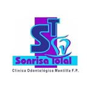

Claridad.
Entender tus opciones y preguntar con tranquilidad.

CLÍNICA ODONTOLÓGICASonrisa TotalES TU MOMENTO.
Con todo lo que eres.
Con todo lo que sientes.
Con una sonrisa muy tuya.
Tu sonrisa merece
estar en primer plano.
LA EXPERIENCIA SONRISA TOTAL
01 — 04Cómo te expresas. Cómo te relacionas. Cómo te sientes. Cuidar tu salud bucal también es darle espacio a todo eso.
CUIDADO DENTAL.
CON SENTIDO HUMANO.
Entender tus opciones y preguntar con tranquilidad.
Hablar de tus inquietudes, expectativas y necesidades.
Dar cada paso con información y una valoración profesional.
TU SONRISA, EN EL CENTRO
02 — 04Explora qué te gustaría cuidar.
El camino se define contigo.
Una conversación sobre tu salud bucal, tus dudas y lo que te gustaría mejorar. Todo comienza con conocerte.
Conversemos sobre el cuidado cotidiano de tu sonrisa y las opciones de atención preventiva según tu valoración.
Forma, color y equilibrio. Cuéntanos qué te gustaría cambiar y pregunta qué alternativas se pueden valorar en tu caso.
La apariencia y la función forman parte de la misma conversación. Consulta las opciones de restauración para tu sonrisa.
LA MEJOR PARTE DE UNA SONRISA
Hay sonrisas que dicen mucho sin decir una palabra. La tuya merece sentirse cómoda, auténtica y libre.
Hablemos de la tuyaTU PRIMERA VISITA
03 — 04No tienes que decidirlo todo hoy.
Comencemos con una conversación.
Escríbenos a @clinicasonrisatotal y cuéntanos el motivo de tu consulta.
Consulta la atención que necesitas, la ubicación y la disponibilidad para tu visita.
Confirma directamente con la clínica los detalles y las indicaciones para tu valoración.
Abre el perfil de Instagram de la clínica y envía un mensaje con el motivo de tu consulta. La disponibilidad y la cita se confirman directamente por ese canal.
No. Puedes empezar contando qué te preocupa o qué te gustaría mejorar. Una valoración profesional permite conocer las opciones adecuadas para tu caso.
Consulta directamente con la clínica los precios, los horarios y la dirección actual antes de tu visita.
TU SIGUIENTE PASO
04 — 04